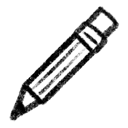

↓
about
welcome to my personal website! my name is max and i like to make silly things and work on cool projects.
i'm a high school student from california who loves to create, whether it's a coding project, a news report, a youtube video, or politically inaccurate satire fanfiction.
in my free time, i like to:
projects

fishSol
The best & most popular fishing + general purpose macro for the Roblox game Sol's RNG.
